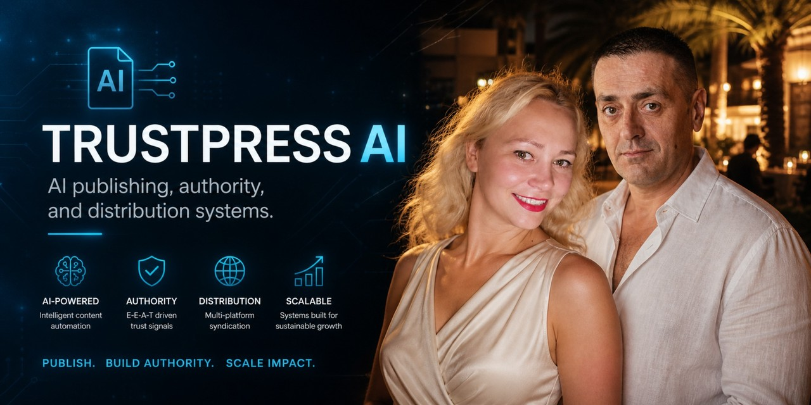
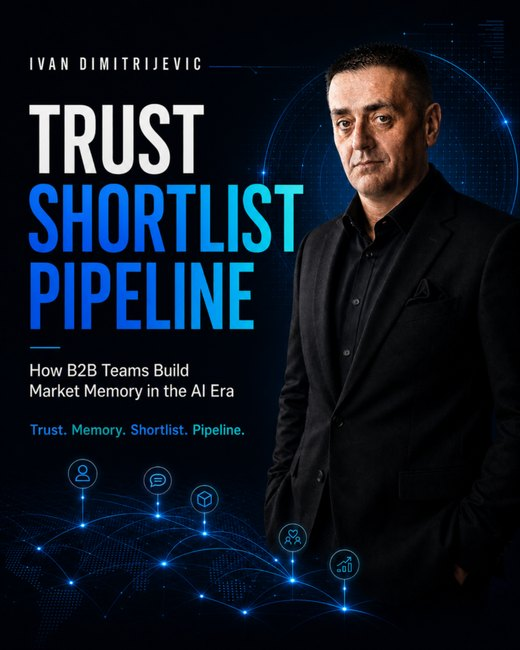
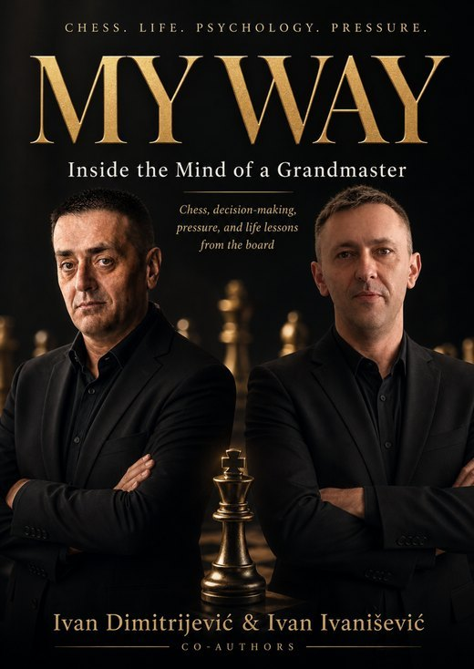

TrustPress AI
TrustPress AI helps founders, experts, and B2B teams turn ideas into books, executive editions, newsletters, and distribution systems that make their expertise easier to discover, trust, remember, and cite.
AI-assisted authority publishing studio
TrustPress AI turns raw expertise into structured authority assets: serious books, executive editions, public pages, newsletters, LinkedIn documents, visual systems, and distribution assets.
The founders
Ivan Dimitrijevic
B2B growth strategist focused on LinkedIn trust systems, market memory, AI-era discoverability, and authority-led distribution.
Natasa Dimitrijevic
Journalist, blogger, and writer with deep experience in storytelling, editorial judgment, and turning expert knowledge into clear public assets.
Books and authority assets

Trust, Shortlist, Pipeline
How B2B Teams Build Market Memory in the AI Era
A strategic book on trust, market memory, shortlist position, AI search, LinkedIn trust systems, and measuring influence beyond last-click theater.

MY WAY: Inside the Mind of Grandmaster
A premium book project exploring chess, decision-making, pressure, psychology, and life lessons from the board.
What TrustPress AI builds
AI publishing
Books, executive editions, article series, newsletters, and authority assets built from real expertise.
Authority systems
Positioning, proof, narrative clarity, and trust signals that make people easier to remember.
Distribution
LinkedIn, web pages, PDFs, newsletters, and AI-search surfaces working together.
Contact TrustPress AI
Want to explore a book, executive edition, premium authority asset, or AI publishing system?
Email: toci1111@gmail.com